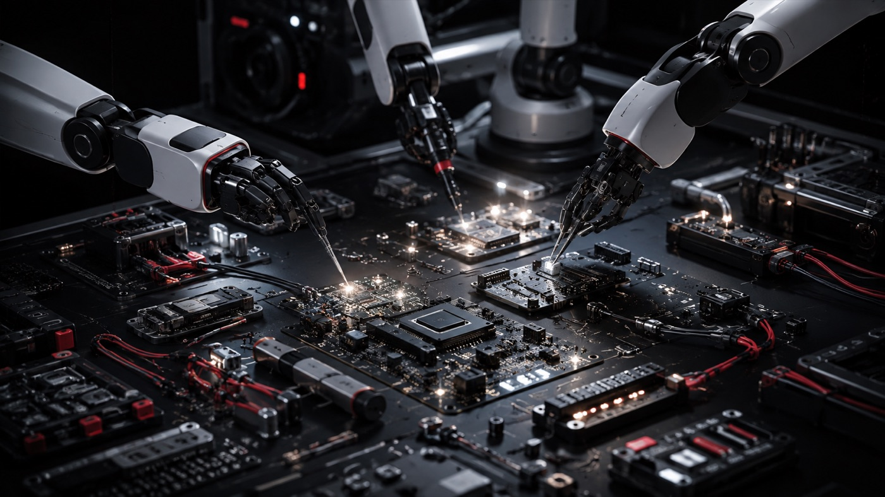
создавайте
инженерная поддержка, площадки и оборудование для прототипов и мелких серий
 правительство
правительствогородская инфраструктура для тех, кто делает роботов,
и тех, кому они нужны
все возможности для развития робототехнических решений и подбора готовых технологий собраны в одной экосистеме

инженерная поддержка, площадки и оборудование для прототипов и мелких серий
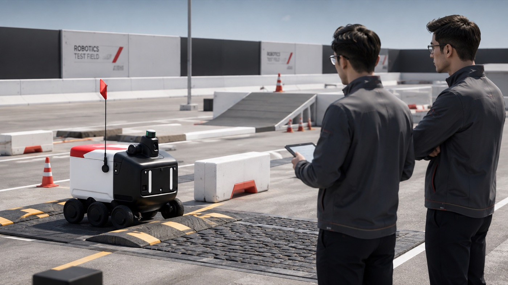
лаборатория и стенды, где решение проходит проверку в условиях реальной эксплуатации
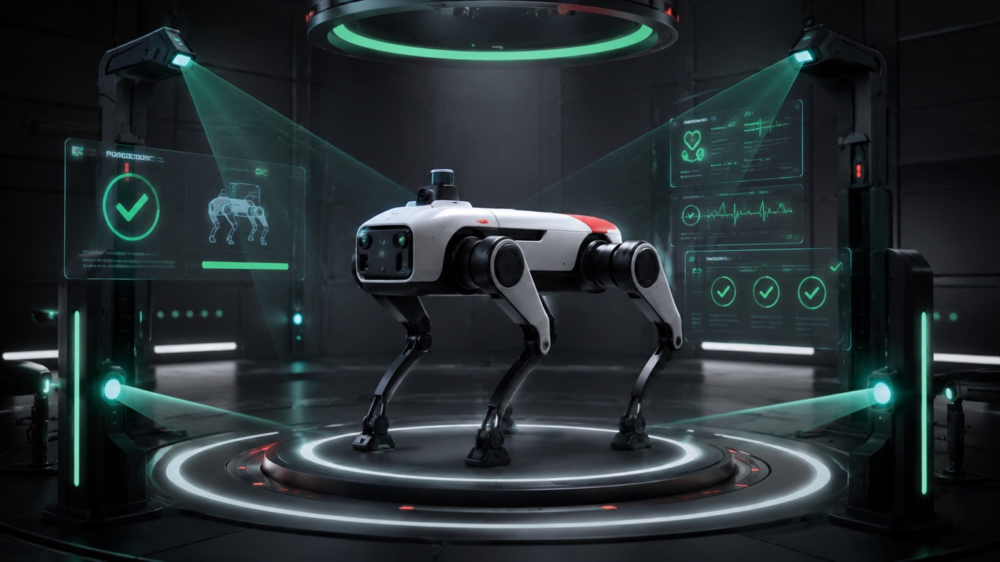
запуск на настоящей задаче заказчика с оценкой эффекта и потенциала внедрения
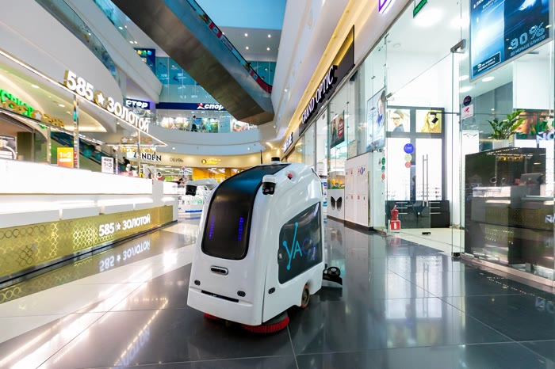
сопровождение поставки и вывод решения в постоянную работу бизнеса и города
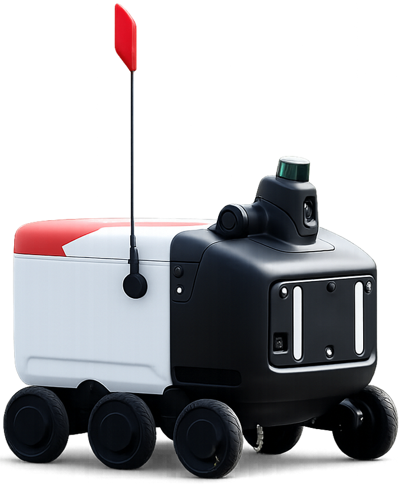
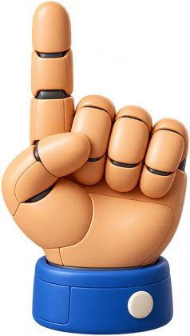
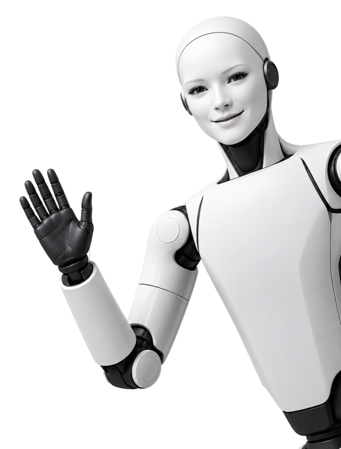
получите финансирование для разработки робота, развития производства и подготовки первой поставки — от прототипа до реального применения
найдите подходящего робота и используйте поддержку города для покупки, интеграции и обслуживания
софинансирование приобретения сервисных роботов, произведённых в рф
возмещение затрат на внедрение робота на производстве
компенсация части процентной ставки по кредиту на покупку и интеграцию промышленного робота
компенсация ежемесячного платежа за роботизированную услугу
финансирование создания новых решений. оператор — московский венчурный фонд
компенсация части ставки по кредиту на создание или модернизацию производства. оператор — мфппип
оборотные средства на производство партии роботов под контракт. оператор — московский венчурный фонд
финансирование апробации технологии на городских площадках. оператор — фонд «московский инновационный кластер»
часть мер находится в проработке — они помечены «готовится». приём заявок по ним откроется после запуска программ. данные на странице демонстрационные.
17 решений в каталоге — промышленные, сервисные и транспортные
площадки в иц «сколково» и индустриальном парке «руднево»: от городской среды до испытаний в воздухе и на воде
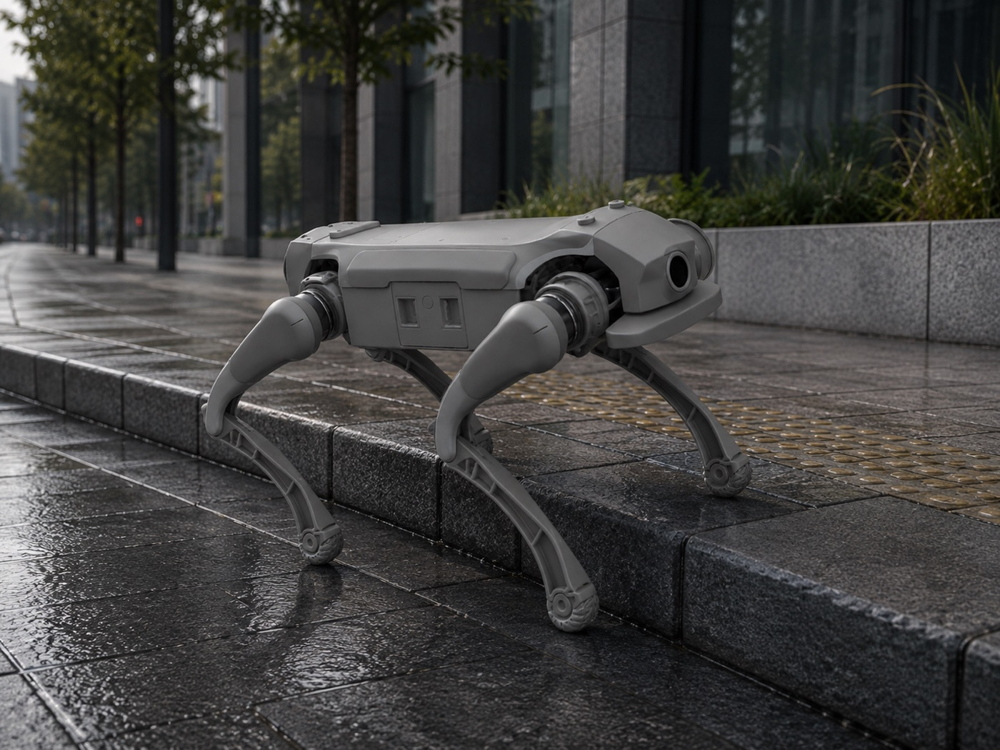
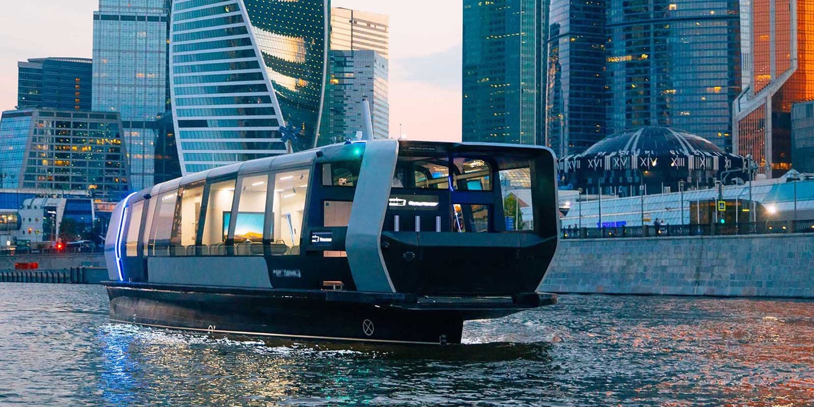
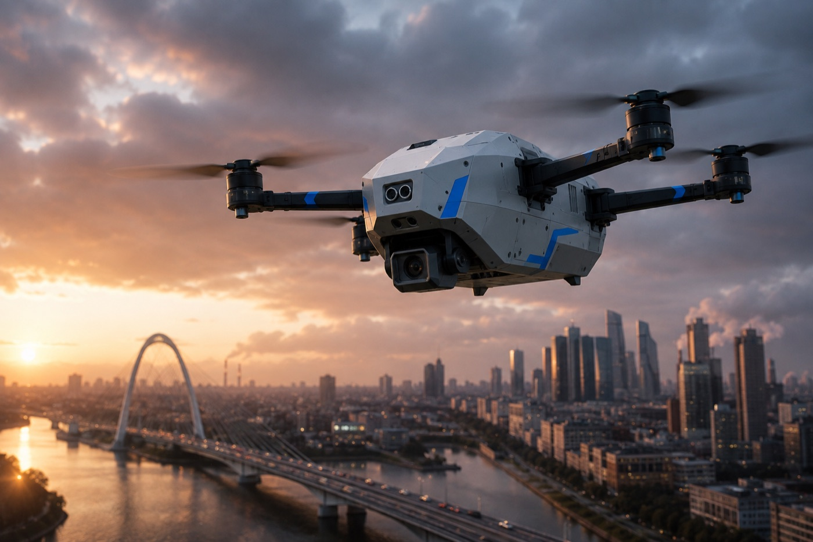
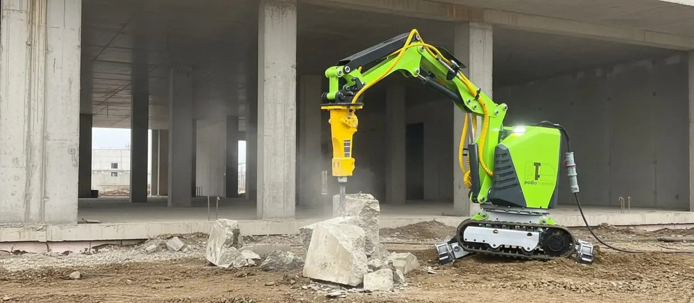
демонтаж на промышленных объектах
заменяет бригаду рабочих в 20–40 человек
смотреть историю внедрения →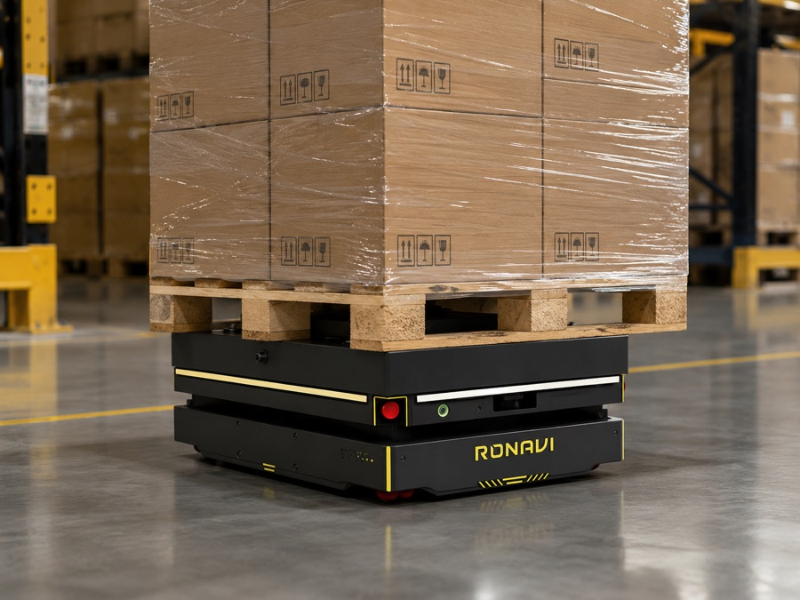
склад «восток-сервис»
снижение себестоимости операции в 2 раза
смотреть историю внедрения →опишите задачу — поможем подобрать решение и формат пилота.